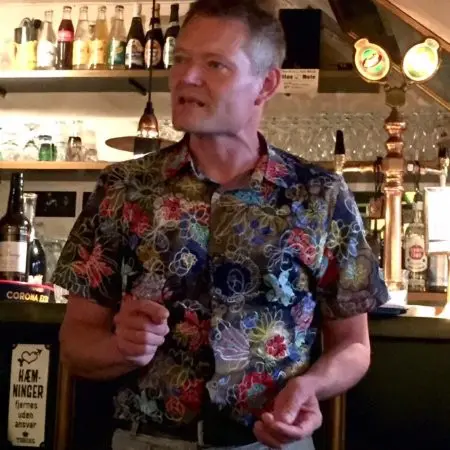

HOME
COURSES
ASSOCIATED PEOPLE
Our Team
Thomas Sicheritz-Pontén
Professor
Computational Biodiscovery Group, University of Copenhagen, Denmark
Bent Petersen
Senior Researcher, PhD
Computational Biodiscovery Group, University of Copenhagen, Denmark
Gemma Atkinson
Senior Lecturer
Department of Experimental Medical Science, Lund University, Sweden
Vasili Hauryliuk
Senior Lecturer
Department of Experimental Medical Science, Lund University, Sweden

Peder Worning
Bioinformatician
Clinical Microbiology Department, Hvidovre Hospital, Denmark
Rodrigo Ibarra Chávez
PostDoc
University of Copenhagen, Denmark
Hanne Ingmer
Professor
Professor, Food Safety and Zoonoses, University of Copenhagen, Denmark